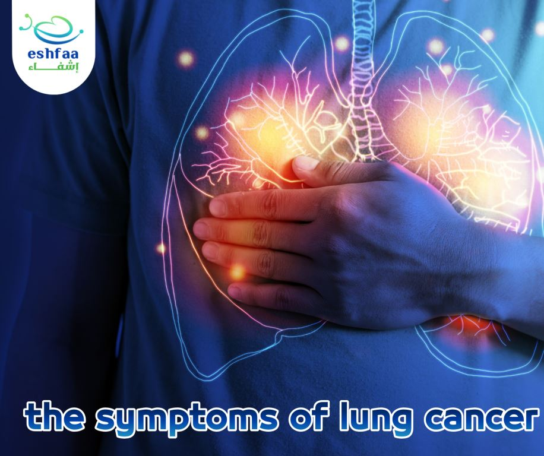
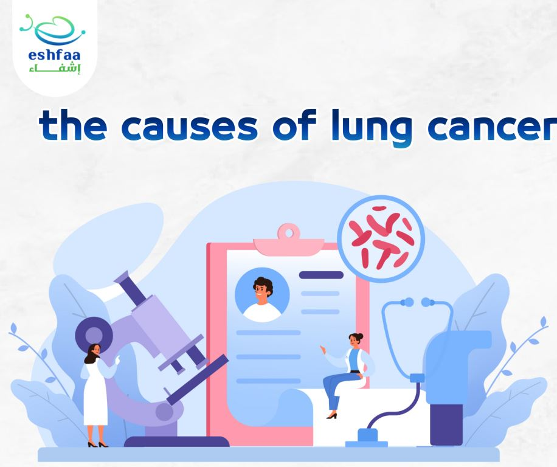
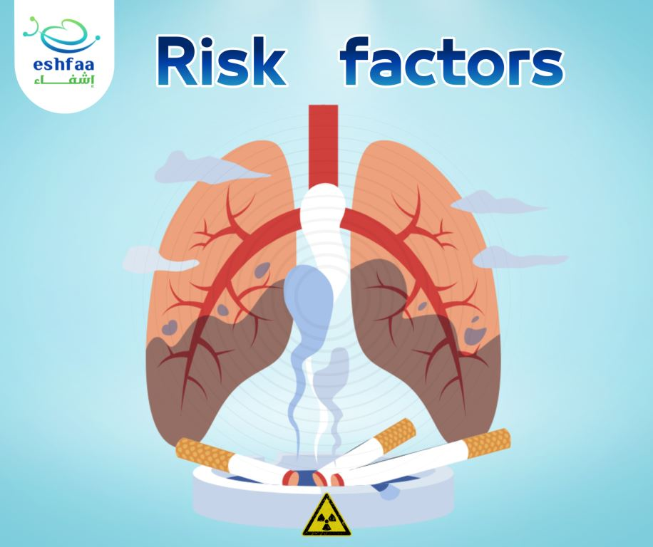
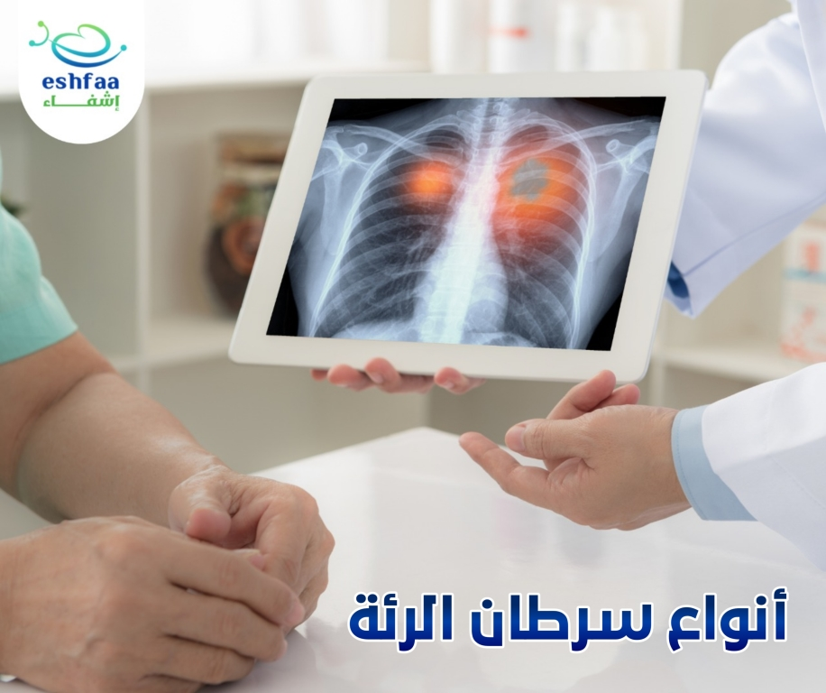
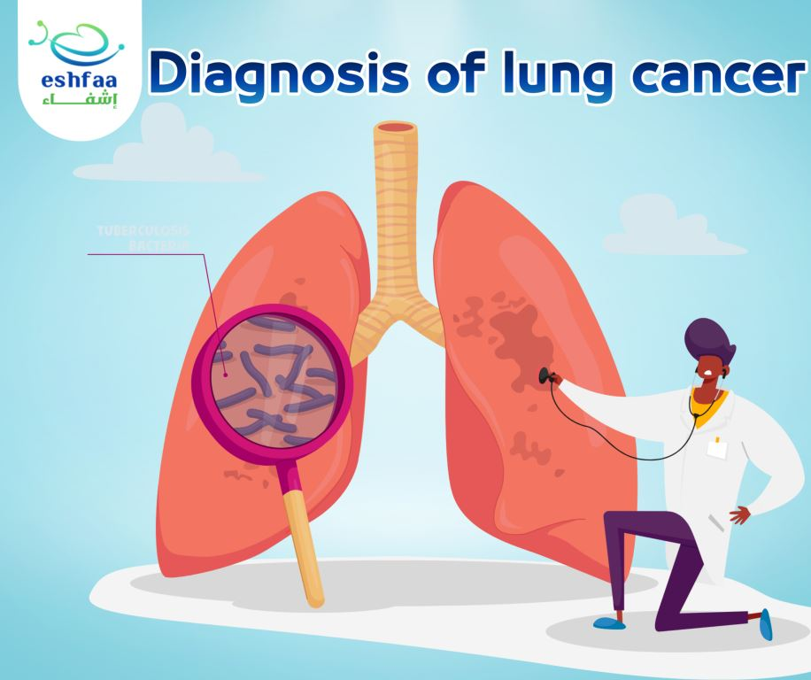
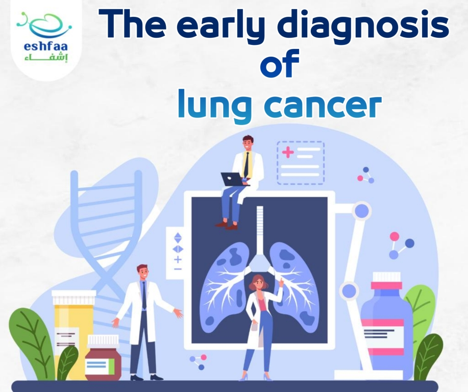
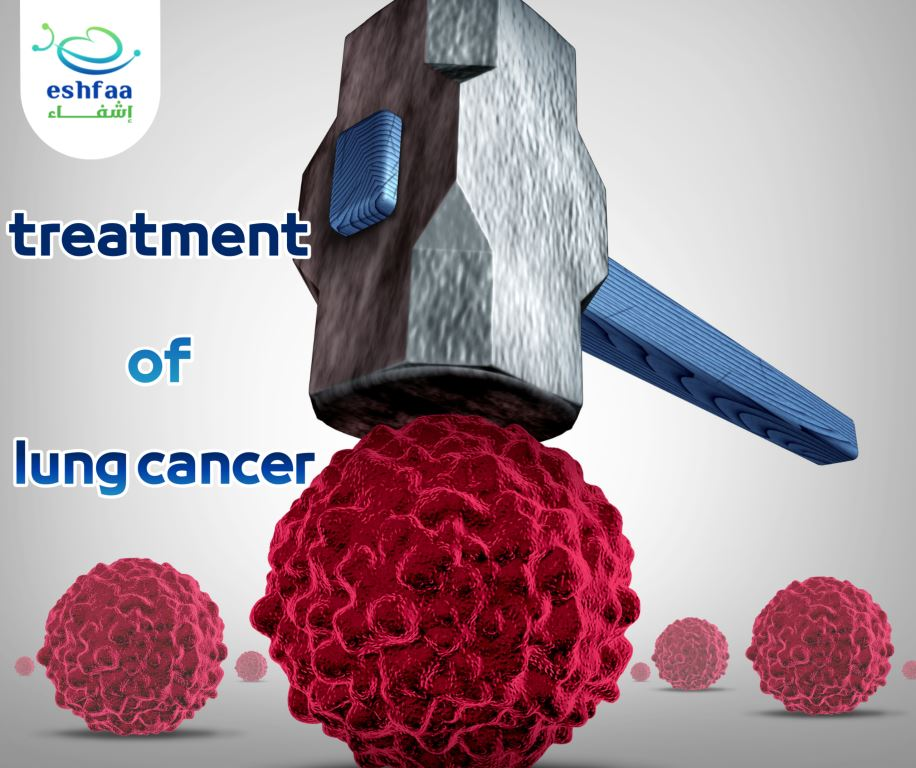
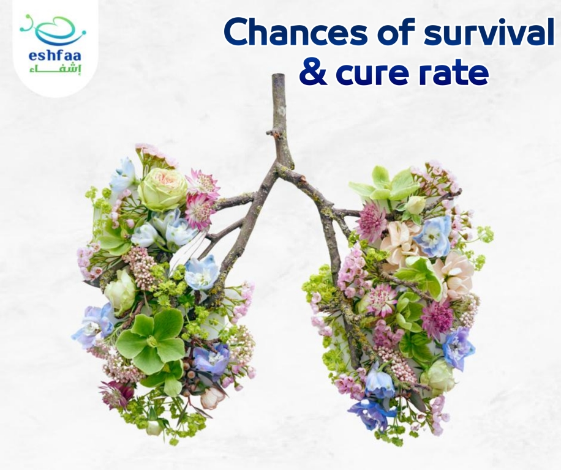
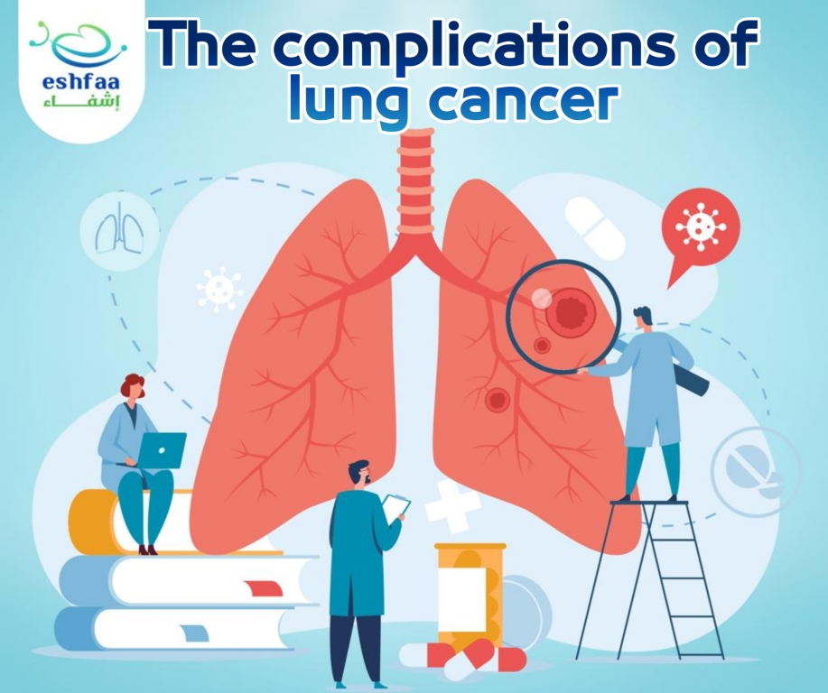
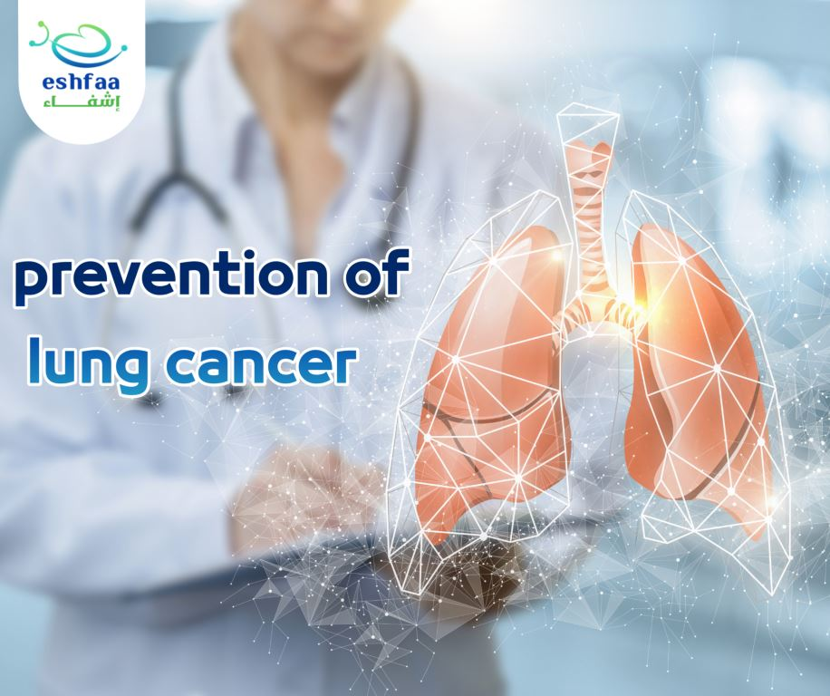

Lung cancer

Do you know what lung cancer is? What and how dangerous is it? How can you get infected with
it? What are its symptoms?
How much chance of recovery from it?
We will answer all those questions and more about lung cancer in details in this article, so
let's start with us and do not hesitate.
What is lung cancer?
Lung cancer is one of the most common types of malignant cancers, which affects the lungs and
spreads inside them and can then migrate and spread to the rest of the body.
And like malignant tumors, it begins with a disturbance in the growth of cells in the lungs
and trachea, where they grow and divide in an abnormally accelerated manner, which leads to
the spread of cancer cells and the formation of tumors inside the lungs.
Lung cancer is considered one of the fatal cancers, as it is classified as one of the most
leading causes to death of all types of cancer, because it destroys the spongy cells of the
lungs that supply the body with oxygen and get rid of carbon dioxide so that it can perform
its vital functions, and lose them the ability to perform their role.
Smoking is the most responsible cause for lung cancer in more than 90% of cases, and
non-smokers can also get it, but the risk increases with increasing smoking period.
What are the symptoms of lung cancer?

Lung cancer may be a silent cancer that can develop without any symptoms until it reaches
serious advanced stages of the disease, and this is one of the factors that lead to its
classification as a highly dangerous disease.
There are some symptoms that can appear in the early stages that indicate the presence of the
disease:
- Shortness of breath
- A chronic cough that does not improve, but gets worse.
- Coughing with phlegm or blood.
- Hoarseness and change in voice.
- Chest pain that increases with breathing or coughing.
- Wheezing.
- Recurring infections such as bronchitis and pneumonia.
- Weakness and general exhaustion.
- Loss of appetite and weight loss.
But there are some symptoms that are considered as warning signs when they appear, they indicate that lung cancer has reached an advanced stage and also indicate its spread to other parts of the body, and the appearance of these symptoms depends on the part of the body to which the disease has spread:
- The presence of lumps around the neck and collarbone.
- Headache.
- Dizziness.
- Disturbance in balance.
- Tingling in the extremities.
- Pain in the shoulders.
- Back pain.
- Puffiness and swelling in the face and upper body.
- Yellowing of the eyes and skin.
There are also some symptoms that may appear as a result of secreting hormone-like substances from the tumor that lead to an imbalance in some body functions, and these symptoms include:
- Muscles weakness.
- Nausea and vomiting.
- Hypertension.
- High blood sugar.
- Seizures.
What are the causes of lung cancer?

All people are exposed to lung cancer, but it was found that 90% of cases result from smoking,
as lung cells are destroyed with the first exposure of lung cells to cigarette smoke filled
with carcinogens, and here the risk of developing the disease increases.
Your body may initially be able to deal with the destruction and change that occurs in the
cells of the lungs, but with repeated and continuous exposure to damage caused by cigarette
smoke, the nature of the cells changes abnormally leading to the formation of cancer cells.
Quitting smoking at any stage, even after a prolonged period of smoking, reduces the incidence
of lung cancer.
Risk factors that increase the incidence of lung cancer:

- Inhaling some gases and carcinogens, such as arsenic, chromium and nickel.
- Genetic mutations.
- Radiation therapy used in the treatment of some other cancers may increase the incidence of lung cancer.
- Passive smoking.
- Having a history of some chronic diseases that affect the lung, such as tuberculosis, chronic pneumonia and chronic bronchitis.
What are the types of lung cancer?

There are many types of lung cancer, including:
1_ Non-small cell lung cancer:
It represents 80-85% of lung cancer types, and is divided into several types, most of them
respond greatly to treatment if diagnosed in the early stages of the disease.
2_ Small cell lung cancer:
It represents about 15-20% of lung cancers, and is considered more dangerous than non-small
cell lung cancer.
Diagnosis of lung cancer:

If you develop symptoms from those mentioned previously or have some risk factors that can
increase lung cancer, you will definitely go to see a doctor to be sure.
Diagnosing lung cancer begins with the doctor examining the patient, knowing the symptoms, and
taking the full medical history and ordering some tests to prove or deny the disease.
1. Examination of blood chemistry.
2. Checking the concentration of blood gases.
3. Imaging tests: through which tumor masses can be detected
- X-ray imaging.
- Magnetic resonance imaging.
- Computerized tomography scan.
4. Bronchoscopy: which provides an opportunity to examine lung cells closely.
5. Laboratory examination of sputum associated with cough.
6. Taking a biopsy from the lung for examination under the microscope and to determine whether
the cells are cancerous or not.
7. If the result of the biopsy examination is positive, this will require a bone scan to
determine the stage of the disease and the extent of its spread.
The role of early diagnosis of lung cancer:

People at high risk of developing lung cancer should have an annual screening by computed
tomography (CT) scan for the following people:
- Those aged 50 to 80 years.
- smokers.
- Anyone who has stopped smoking during the last 15 years.
Treatment of Lung cancer:
The treatment program for lung cancer depends on several factors, on the basis of which the treating doctor sets the appropriate program for each patient, and among these factors are the following:
- Age of the patient.
- General health status.
- The type of lung cancer.
- The stage of the disease.
- Extent of its spread.
- The location and size of the tumor.
1. Surgical intervention:
Surgical intervention is one of the first options, especially in the first or second stage of
the disease, the tumor and part of the healthy cells around it are removed, and lymph nodes
can also be removed for examination.
Chemotherapy or radiotherapy are used before surgery in case of large tumers to reduce its
size before excision, and it can also be used after surgical intervention if there is a chance
for cancerous cells to return again.
2. Radiotherapy:
High-energy beams of X-rays and protons are used and directed at tiny points on the body to
destroy cancer cells.
It may help relieve symptoms associated with cancer, such as pain, and is used before or after
surgery and is usually combined with chemotherapy.
3. Chemotherapy:
These are certain medications taken by mouth or injected into a vein to destroy cancer cells.
They are used after surgery to destroy any remaining cancer cells and to prevent them from
spreading again.
4. Immunotherapy:
In some advanced stages of cancer, the body's immune system may be unable to confront cancer
cells that adopt a way to escape from the immune system. In these cases, immunotherapy is used
to help the body control the disease.
5. Palliative care:
Lung cancer and the side effects of treatments cause severe and painful symptoms for patients,
and it is necessary to focus on some treatment methods to reduce the severity of these
symptoms.
In addition , some people in the advanced stages of the disease can choose not to complete the
treatment plan, this is where the role of palliative care comes in relieving symptoms of the
disease rather than treating the cancer itself.
Chances of survival and cure rate for lung cancer:

Always early diagnosis of any disease increases the rate of cure, as well as in the case of
lung cancer.
The chance of surviving lung cancer in general depends on the type of cancer and its stage
when it was discovered. The longevity of a lung cancer patient depends on his age, his general
health condition, and the extent of the disease’s response to treatment.
So, if lung cancer is detected early and the patient receives appropriate treatment for his
condition, this increases the cure rate and the chance of survival for five years to 50-53%.
What are the complications of lung cancer?

- Repeated respiratory infection such as pneumonia.
- Increasing the rate of blood clotting and increasing the chance of developing lung clots.
- Increasing calcium level in the blood.
- Pressure on the spine, resulting in pain and movement problems.
- Increased pressure on the heart muscle, which leads to its failure.
- Affection of nerves leading to numbness.
- Difficulty swallowing due to the spread of the disease to the esophagus.
- Facial swelling.
Prevention of Lung cancer:
You can reduce the risk of developing lung cancer by some of the following tips:
- Quit Smoking.
- Avoid exposure to carcinogens and radiation.
- Healthy diet.
- Exercising and losing excess weight.
References
- https://www.healthline.com/health/lung-cancer#risk-factors
- https://www.mayoclinic.org/diseases-conditions/lung-cancer/symptoms-causes/syc-20374620
- https://www.mayoclinic.org/diseases-conditions/lung-cancer/diagnosis-treatment/drc-20374627
- https://www.healthline.com/health/lung-cancer-causes
- https://www.clevelandclinicabudhabi.ae/ar/health-hub/health-library/pages/lung-cancer.aspx
- https://altibbi.com/%D9%85%D8A7%D8%AA